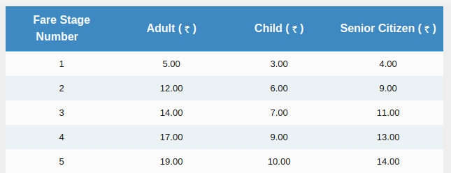

How BMTC Is Exploiting Crores From Bangalore Citizens?
BMTC (Bengaluru Metropolitan Transport Corporation) is a government agency which operates the public transport bus service in Bangalore, India. It holds monopoly as it is the only choice for public transportation.
Fare Calculation
BMTC considers ~2KM distance as a stage and the fares for each stage are as follows.

Let's say, you want to travel from Indira Nagar to BTM Layout, it will cover 5 stages. So, BMTC charges 19₹ for that.
Exploitation?
If you travel from Indira Nagar KFC signal to Doopanahalli Arch(1.2KM), which comes under 1 stage, you have to pay 5₹. On the other hand, if you travel Indira Nagar KFC signal to Doopanahalli bustop(1.4KM), you have to pay 12₹.
How can BMTC charge 5₹ for the first 1.2KM and 7₹ for the subsequent 0.2KM? If BMTC charges, 5₹ for 1st stage. Then it should charge 5₹ + extra for next stage. But it shouldn't be more than 10₹.
You can just take 1 ticket(5₹) for 1st stage(1.2KM) and one more ticket(5₹) for the next stage(0.2KM). You can just travel 2 stages with 2 tickets for 10₹.
Turnsout BMTC is charging 3₹ extra on every ticket which covers atleast 2 stages. As lakhs of people travel in BMTC buses daily, in a month, this 3₹ turns into crores of rupees.
I am not sure when BMTC has started charging like this. A month back, I sent them an email asking for an explaination of unfair bus tickets and they haven't replied yet.